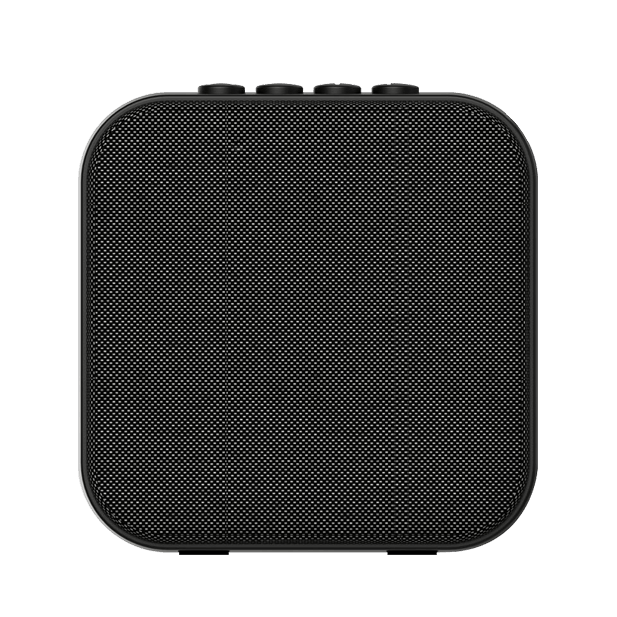
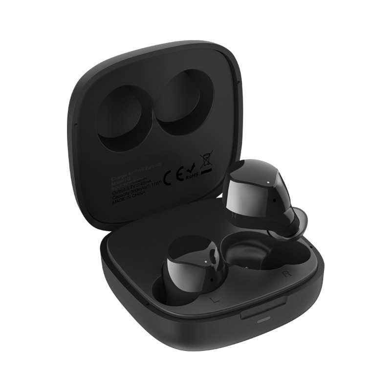

Компания TECNO развивает экосистему фирменных аксессуаров
-
SQUARE-S1
Портативная колонка, которую стоит брать с собой буквально всегда. Минимальные габариты, 10 часов прослушивания музыки, 52-миллиметровый динамик для максимально качественного звука — всё это благоволит регулярному использованию гаджета. А чего только стоит мощный бас и реалистичный эффект стерео!
-
BUDS 1

Удобные полностью беспроводные вкладыши с реалистичным эффектов стерео и действительно мощным звуком с акцентом на бас. Наушники очень быстро подключаются к смартфонам TECNO и радуют любимыми музыкальными композициями на протяжении 4 часов без учёта зарядного футляра и 12 часов вместе с ним.
-
HIPODS-H2
Максимально технологичные полностью беспроводные наушники, которые ещё и выглядят здорово. Внутриканальные вкладыши очень быстро подключаются к смартфонам TECNO и работают автономно до 24 часов. А ещё они защищены от влаги по стандарту IPX4, что делает их более практичными.